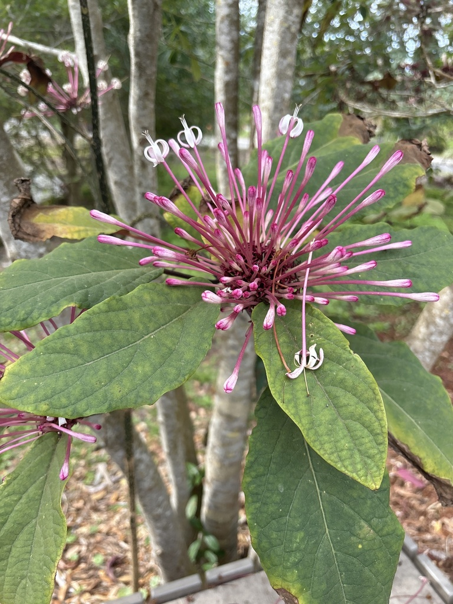

- Flowers in the evening, when most ornamentals have stopped for the day. The white star-shaped flowers open as the light fades, releasing a sweet fragrance and revealing long purple stamens that give the plant its name.
- A member of the mint family (Lamiaceae) — confirmed by the square stems. Formerly placed in the verbena family; DNA reclassified it.
- Aggressive spreader by underground suckers. A single plant becomes a colony; a colony requires active management. Worth the trade-off if the space is right.
- One of the more dramatic nighttime-flowering shrubs available for Florida gardens.
Non-native. Native to the Philippines. Member of Lamiaceae — the mint family. Formerly classified in Verbenaceae before DNA analysis prompted reclassification. Related to the park's Turk's Turban and King's Mantle.
- The Starburst Bush earns its name at dusk. The flowers open in the evening — white, star-shaped, with dramatically exserted purple stamens that extend well beyond the petals. The contrast of white petals and deep purple stamens against dark foliage in low light is striking in a way that doesn't fully translate to photographs or midday observation.
- The flowering timing is not an accident. The plant is adapted for nocturnal pollinators — moths and hawkmoths that fly after dark and are guided by fragrance and pale-colored flowers that reflect available light. The fragrance released in the evening is noticeably stronger than during the day.
- The plant spreads by underground suckers and will expand its territory steadily unless managed. This is worth knowing before planting — a Starburst Bush in the right spot with room to spread is a feature; one placed against a wall or near other plants it can overwhelm is a management problem.
Moths and hawkmoths are the primary pollinators, attracted by the evening fragrance and white flower color. The purple fruit that follows the flowers — glossy, jewel-like — is eaten by birds.
As a dense, spreading shrub it provides cover and structure for small birds and ground-feeding wildlife.
White, star-shaped, with long exserted purple stamens. Open in the evening, most visually striking at dusk and in low light. Fragrant. Produced over a long season.
Small, glossy, purple-black berries enclosed in a persistent red-purple calyx. Ornamentally attractive. Eaten by birds.
Large, opposite, dark glossy green, ovate with a pointed tip. Stems square in cross-section — mint family signature.
Evergreen to semi-evergreen shrub, 6 to 10 feet tall. Spreads aggressively by underground suckers. Can form large colonies.
Visit at dusk — this is the plant at its best. The white star flowers with purple stamens against dark foliage are distinctive. The red-purple calyces holding the dark berries are visible year-round on mature plants. Square stems confirm mint family membership.
This isn't a food plant — the fruit isn't eaten, though there's some traditional medicinal use. No significant toxicity is documented; avoid ingestion as a precaution.
No significant toxicity to dogs is documented, though eating a lot of fruit may cause mild stomach upset.

- © nellmcphillips (CC-BY-NC), via iNaturalist
- © Randall Carter (CC-BY-NC), via iNaturalist